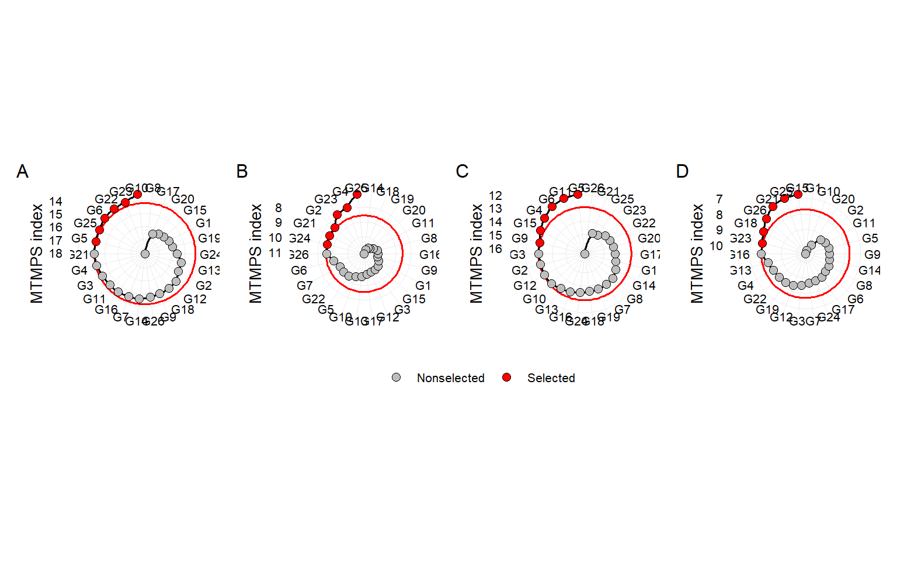

Analysis
1 Libraries
To reproduce the examples of this material, the R packages the following packages are needed.
library(EnvRtype)
library(rio)
library(factoextra)
library(FactoMineR)
library(ggrepel)
library(ggh4x)
library(superheat)
library(ggridges)
library(corrr)
library(tidyverse)
library(metan)
library(rnaturalearth)
my_theme <-
theme_bw() +
theme(panel.spacing = unit(0, "cm"),
panel.grid = element_blank(),
legend.position = "bottom")2 Datasets
2.1 Traits
df_traits <-
import("https://bit.ly/df_traits") |>
metan::as_factor(1:3)
# grain yield mean in each environment
df_gy <-
df_traits |>
means_by(ENV, .vars = GY)
df_var <-
df_traits |>
means_by(ENV, GEN, .vars = GY) |>
var_by(ENV) |>
rename(VAR = GY)2.2 Climate variables
2.2.1 Scripts to gather data
df_env <- import("https://bit.ly/local_info")
ENV <- df_env$Code
LAT <- df_env$Lat
LON <- df_env$Lon
ALT <- df_env$Alt
START <- df_env$Sowing
END <- df_env$Harvesting
# see more at https://github.com/allogamous/EnvRtype
df_climate <-
get_weather(env.id = ENV,
lat = LAT,
lon = LON,
start.day = START,
end.day = END)
# GDD: Growing Degree Day (oC/day)
# FRUE: Effect of temperature on radiation use efficiency (from 0 to 1)
# T2M_RANGE: Daily Temperature Range (oC day)
# SPV: Slope of saturation vapour pressure curve (kPa.Celsius)
# VPD: Vapour pressure deficit (kPa)
# ETP: Potential Evapotranspiration (mm.day)
# PEPT: Deficit by Precipitation (mm.day)
# n: Actual duration of sunshine (hour)
# N: Daylight hours (hour)
# RTA: Extraterrestrial radiation (MJ/m^2/day)
# SRAD: Solar radiation (MJ/m^2/day)
# T2M: Temperature at 2 Meters
# T2M_MAX: Maximum Temperature at 2 Meters
# T2M_MIN: Minimum Temperature at 2 Meters
# PRECTOT: Precipitation
# WS2M: Wind Speed at 2 Meters
# RH2M: Relative Humidity at 2 Meters
# T2MDEW: Dew/Frost Point at 2 Meters
# ALLSKY_SFC_LW_DWN: Downward Thermal Infrared (Longwave) Radiative Flux
# ALLSKY_SFC_SW_DWN: All Sky Insolation Incident on a Horizontal Surface
# ALLSKY_TOA_SW_DWN: Top-of-atmosphere Insolation
# [1] "env" "ETP" "GDD" "PETP" "RH2M" "SPV"
# [8] "T2M" "T2M_MAX" "T2M_MIN" "T2M_RANGE" "T2MDEW" "VPD"
# Compute other parameters
env_data <-
df_climate %>%
as.data.frame() %>%
param_temperature(Tbase1 = 10, # choose the base temperature here
Tbase2 = 33, # choose the base temperature here
merge = TRUE) %>%
param_atmospheric(merge = TRUE) %>%
param_radiation(merge = TRUE)2.2.2 Tidy climate data
env_data <- import("https://bit.ly/df_climate")
str(env_data)
## 'data.frame': 2257 obs. of 19 variables:
## $ env : chr "DZ2019" "DZ2019" "DZ2019" "DZ2019" ...
## $ LON : num 117 117 117 117 117 ...
## $ LAT : num 37.7 37.7 37.7 37.7 37.7 ...
## $ YEAR : int 2019 2019 2019 2019 2019 2019 2019 2019 2019 2019 ...
## $ MM : int 6 6 6 6 6 6 6 6 6 6 ...
## $ DD : int 5 6 7 8 9 10 11 12 13 14 ...
## $ DOY : int 156 157 158 159 160 161 162 163 164 165 ...
## $ YYYYMMDD : chr "06/05/2019" "06/06/2019" "06/07/2019" "06/08/2019" ...
## $ daysFromStart: int 1 2 3 4 5 6 7 8 9 10 ...
## $ tmean : num 24.2 23.5 25.7 28.9 26.1 ...
## $ tmax : num 26.8 30.3 33.6 36.9 32.9 ...
## $ tmin : num 21.1 18.4 16.2 22.2 19.8 ...
## $ prec : num 13.25 1.42 0.02 0.09 0.02 ...
## $ trange : num 5.7 11.9 17.4 14.6 13.1 ...
## $ rh : num 62.1 60 51.8 47.5 42.4 ...
## $ etp : num 5.21 6.34 10.05 11.66 13.67 ...
## $ dbp : num 8.04 -4.92 -10.03 -11.57 -13.65 ...
## $ svpc : num 0.178 0.182 0.188 0.238 0.203 ...
## $ vpd : num 1.16 1.61 1.95 2.83 2.38 ...3 Scripts
3.1 Location map
china <-
ne_states(country = c("china", "taiwan"),
returnclass = "sf")
locs <-
import("https://bit.ly/local_info") %>%
distinct(Lat, .keep_all = TRUE)
china <-
mutate(china,
Province = ifelse(name %in% locs$Province, name, NA))
ggplot(data = china) +
geom_sf(aes(fill = Province), size = 0.2) +
ggthemes::theme_map() +
scale_fill_discrete(na.value = "gray97",
labels = c(unique(locs$Province), "others")) +
geom_point(data = locs,
aes(x = Lon, y = Lat, size = Altitude),
color = "black",
fill = "red",
shape = 21) +
geom_label_repel(data = locs,
aes(label = Location,
x = Lon,
y = Lat),
fill = "green",
color = "black",
segment.color = 'black',
force = 38,
size = 3) +
theme(legend.position = c(0.95, 0.1))
Figure 3.1: Location map
ggsave("figs/fig1_map.pdf", width = 10, height = 7)3.2 Environmental kinships
id_var <- names(env_data)[10:19]
EC <- W_matrix(env.data = env_data,
var.id = id_var,
by.interval = TRUE,
statistic = 'quantile',
time.window = c(0, 15, 35, 65, 90, 120))
distances <-
env_kernel(env.data = EC,
gaussian = TRUE)
d <-
superheat(distances[[2]],
heat.pal = c("#b35806", "white", "#542788"),
pretty.order.rows = TRUE,
pretty.order.cols = TRUE,
col.dendrogram = TRUE,
legend.width = 4,
left.label.size = 0.1,
bottom.label.text.size = 5,
bottom.label.size = 0.2,
bottom.label.text.angle = 90,
legend.text.size = 17,
heat.lim = c(0, 1),
padding = 0.5,
legend.height=0.2)
Figure 3.2: Similarity
ggsave(filename = "figs/fig2_heat_env.pdf",
plot = d$plot,
width = 10,
height = 10)#
me2 <- c("YC2020", "SX2020", "JS2020", "NY2020")
me3 <- c("GC2020", "SZ2020", "JN2020", "LZ2020")
me1 <- set_difference(as.character(unique(df_traits$ENV)), me2, me3)
# Include a column to mega-environment
df_traits <-
df_traits |>
mutate(me = case_when(ENV %in% me1 ~ "ME1",
ENV %in% me2 ~ "ME2",
ENV %in% me3 ~ "ME3"))
env_data_me <-
env_data |>
mutate(me = case_when(env %in% me1 ~ "ME1",
env %in% me2 ~ "ME2",
env %in% me3 ~ "ME3"))
# long format for climate data
env_data_d <-
env_data_me |>
remove_cols(env, prec, LON:YYYYMMDD, daysFromStart) |>
pivot_longer(-me)
# long format for grain yield
df_gy_dist <-
df_traits |>
select(me, GY) |>
mutate(name = "GY", .after = me) |>
rename(value = GY)3.3 Correlation analysis
env_data |>
select_cols(tmean:vpd) |>
correlate() |>
network_plot() +
guides(color = guide_colorbar(barheight = 1,
barwidth = 20,
ticks.colour = "black")) +
theme(legend.position = "bottom")
Figure 3.3: correlation analysis
ggsave("figs/fig3_network.pdf", width = 8, height = 8)3.4 Principal component analysis
prec <-
env_data_me %>%
sum_by(env, .vars = prec)
# compute the mean by environment and year
pca <-
env_data_me |>
remove_cols(me, prec, LON:YYYYMMDD, daysFromStart) %>%
pivot_longer(-env) %>%
means_by(env, name) %>%
pivot_wider(names_from = name, values_from = value) %>%
# set_names(c("env", varnames)) %>%
left_join(prec, by = "env") %>%
left_join(df_gy, by = c("env" = "ENV")) %>%
left_join(df_var, by = c("env" = "ENV")) %>%
mutate(me = case_when(env %in% me1 ~ "ME1",
env %in% me2 ~ "ME2",
env %in% me3 ~ "ME3")) |>
as.data.frame() |>
column_to_rownames("env")
# compute the PCA with
pca_model <- PCA(pca,
quali.sup = 13,
graph = FALSE)
fviz_pca_biplot(pca_model,
repel = TRUE,
habillage = 13,
col.var = "gray40",
title = NULL) +
coord_equal()
Figure 3.4: biplot for PCA
ggsave("figs/fig4_pca.pdf", width = 7, height = 7)3.5 Environmental tipology
names.window <- c('1-intial growing','2-leaf expansion I','3-leaf expansion II','4-flowering','5-grain filling', "")
out <-
env_typing(env.data = env_data,
env.id = "env",
var.id = c("trange", "tmax", "tmin", "dbp", "etp", "vpd"),
by.interval = TRUE,
time.window = c(0, 15, 35, 65, 90, 120),
names.window = names.window)
out2 <-
separate(out,
env.variable,
into = c("var", "freq"),
sep = "_",
extra = "drop") |>
mutate(me = case_when(env %in% me1 ~ "ME1",
env %in% me2 ~ "ME2",
env %in% me3 ~ "ME3"))3.5.1 vpd
# plot the distribution of envirotypes for dbp
variable <- "vpd"
p1 <-
out2 |>
subset(var == variable) |> # change the variable here
ggplot() +
geom_bar(aes(x=Freq, y=env,fill=freq),
position = "fill",
stat = "identity",
width = 1,
color = "white",
size=.2)+
facet_grid(me~interval, scales = "free", space = "free")+
scale_y_discrete(expand = c(0,0))+
scale_x_continuous(expand = c(0,0))+
xlab('Relative Frequency of Occurence')+
ylab("Environment")+
labs(fill='Envirotype')+
theme(axis.title = element_text(size=12),
legend.text = element_text(size=9),
strip.text = element_text(size=12),
legend.title = element_text(size=12),
strip.background = element_rect(fill="gray95",size=1),
legend.position = 'bottom')
# by mega environment
p2 <-
out2 |>
subset(var == variable) |> # change the variable here
sum_by(me, freq, interval) |>
ggplot() +
geom_bar(aes(x=Freq, y=me,fill=freq),
position = "fill",
stat = "identity",
width = 1,
color = "white",
size=.2)+
facet_wrap(~interval, nrow = 1)+
scale_y_discrete(expand = c(0,0))+
scale_x_continuous(expand = c(0,0))+
xlab('Relative Frequency of Occurence')+
ylab("Environment")+
labs(fill='Envirotype')+
theme(axis.title = element_text(size=12),
legend.text = element_text(size=9),
strip.text = element_text(size=12),
legend.title = element_text(size=12),
strip.background = element_rect(fill="gray95",size=1),
legend.position = 'bottom') +
scale_fill_discrete(direction = 1)
arrange_ggplot(p1, p2,
heights = c(0.85, 0.15),
tag_levels = "a",
guides = "collect")
Figure 3.5: Quantiles for vapor pressure deficit observed in the studied environments (a) and mega-environments (b) across distinct crop stages.
ggsave("figs/fig5_typology_vpd.pdf", width = 12, height = 7)3.5.2 dbp
# plot the distribution of envirotypes for dbp
variable <- "dbp"
p1 <-
out2 |>
subset(var == variable) |> # change the variable here
as_factor(freq) |>
mutate(freq = fct_relevel(freq, "(-2.25,48.9]", "(-7.62,-2.25]", "(-9.94,-7.62]", "(-13.1,-9.94]")) |>
ggplot() +
geom_bar(aes(x=Freq, y=env,fill=freq),
position = "fill",
stat = "identity",
width = 1,
color = "white",
size=.2)+
facet_grid(me~interval, scales = "free", space = "free")+
scale_y_discrete(expand = c(0,0))+
scale_x_continuous(expand = c(0,0))+
xlab('Relative Frequency of Occurence')+
ylab("Environment")+
labs(fill='Envirotype')+
theme(axis.title = element_text(size=12),
legend.text = element_text(size=9),
strip.text = element_text(size=12),
legend.title = element_text(size=12),
strip.background = element_rect(fill="gray95",size=1),
legend.position = 'bottom')
# by mega environment
p2 <-
out2 |>
subset(var == variable) |> # change the variable here
sum_by(me, freq, interval) |>
as_factor(freq) |>
mutate(freq = fct_relevel(freq, "(-2.25,48.9]", "(-7.62,-2.25]", "(-9.94,-7.62]", "(-13.1,-9.94]")) |>
ggplot() +
geom_bar(aes(x=Freq, y=me,fill=freq),
position = "fill",
stat = "identity",
width = 1,
color = "white",
size=.2)+
facet_wrap(~interval, nrow = 1)+
scale_y_discrete(expand = c(0,0))+
scale_x_continuous(expand = c(0,0))+
xlab('Relative Frequency of Occurence')+
ylab("Environment")+
labs(fill='Envirotype')+
theme(axis.title = element_text(size=12),
legend.text = element_text(size=9),
strip.text = element_text(size=12),
legend.title = element_text(size=12),
strip.background = element_rect(fill="gray95",size=1),
legend.position = 'bottom') +
scale_fill_discrete(direction = 1)
arrange_ggplot(p1, p2,
heights = c(0.85, 0.15),
tag_levels = "a",
guides = "collect")
Figure 3.6: Quantiles for deficit by precipitation observed in the studied environments (a) and mega-environments (b) across distinct crop stages.
ggsave("figs/fig6_typology_dbp.pdf", width = 12, height = 7)3.6 Selection for all environments
3.6.1 Deviance analysis
mod_global <-
waasb(df_traits,
env = ENV,
gen = GEN,
rep = REP,
resp = c(GMC, PH, EH, BTL, GY, EL, ER, GWE, HSW),
mresp = c("l, l, l, l, h, h, h, h, h"),
wresp = c(60, 60, 60, 60, 75, 60, 60, 60, 60),
random = "all")3.6.2 MTSI for all the environments
## mtsi global
SI <- 25
mtsi_global <- mtsi(mod_global, SI = SI)
##
## -------------------------------------------------------------------------------
## Principal Component Analysis
## -------------------------------------------------------------------------------
## # A tibble: 9 × 4
## PC Eigenvalues `Variance (%)` `Cum. variance (%)`
## <chr> <dbl> <dbl> <dbl>
## 1 PC1 2.89 32.1 32.1
## 2 PC2 1.96 21.8 53.9
## 3 PC3 1.09 12.1 65.9
## 4 PC4 0.896 9.96 75.9
## 5 PC5 0.808 8.97 84.9
## 6 PC6 0.691 7.68 92.6
## 7 PC7 0.367 4.08 96.6
## 8 PC8 0.255 2.83 99.5
## 9 PC9 0.0481 0.534 100
## -------------------------------------------------------------------------------
## Factor Analysis - factorial loadings after rotation-
## -------------------------------------------------------------------------------
## # A tibble: 9 × 6
## VAR FA1 FA2 FA3 Communality Uniquenesses
## <chr> <dbl> <dbl> <dbl> <dbl> <dbl>
## 1 GMC -0.635 0.141 0.285 0.504 0.496
## 2 PH -0.888 -0.103 -0.292 0.885 0.115
## 3 EH -0.899 -0.155 0.137 0.850 0.150
## 4 BTL 0.0469 0.0981 -0.882 0.789 0.211
## 5 GY -0.365 0.772 -0.264 0.798 0.202
## 6 EL 0.0397 0.573 0.112 0.343 0.657
## 7 ER 0.529 0.591 0.238 0.685 0.315
## 8 GWE 0.166 0.794 -0.353 0.783 0.217
## 9 HSW 0.356 0.412 -0.0196 0.297 0.703
## -------------------------------------------------------------------------------
## Comunalit Mean: 0.6594318
## -------------------------------------------------------------------------------
## Selection differential for the waasby index
## -------------------------------------------------------------------------------
## # A tibble: 9 × 6
## VAR Factor Xo Xs SD SDperc
## <chr> <chr> <dbl> <dbl> <dbl> <dbl>
## 1 GMC FA 1 53.3 72.9 19.6 36.8
## 2 PH FA 1 55.6 68.8 13.2 23.7
## 3 EH FA 1 49.9 60.8 10.9 21.9
## 4 GY FA 2 48.8 71.7 22.8 46.7
## 5 EL FA 2 51.2 62.2 11.0 21.4
## 6 ER FA 2 50.7 53.8 3.09 6.09
## 7 GWE FA 2 57.3 65.4 8.14 14.2
## 8 HSW FA 2 58.5 51.9 -6.56 -11.2
## 9 BTL FA 3 60.1 60.8 0.755 1.26
## -------------------------------------------------------------------------------
## Selection differential for the mean of the variables
## -------------------------------------------------------------------------------
## # A tibble: 9 × 11
## VAR Factor Xo Xs SD SDperc h2 SG SGperc sense goal
## <chr> <chr> <dbl> <dbl> <dbl> <dbl> <dbl> <dbl> <dbl> <chr> <dbl>
## 1 GMC FA 1 28.5 27.5 -0.966 -3.39 0.816 -0.788 -2.77 decrease 100
## 2 PH FA 1 275. 267. -7.88 -2.87 0.953 -7.51 -2.73 decrease 100
## 3 EH FA 1 106. 104. -1.72 -1.62 0.904 -1.55 -1.47 decrease 100
## 4 GY FA 2 10.6 11.0 0.409 3.86 0.511 0.209 1.98 increase 100
## 5 EL FA 2 18.2 18.4 0.197 1.08 0.759 0.150 0.821 increase 100
## 6 ER FA 2 16.1 16.4 0.242 1.50 0.908 0.220 1.36 increase 100
## 7 GWE FA 2 169. 170. 0.934 0.552 0.646 0.603 0.356 increase 100
## 8 HSW FA 2 34.4 33.5 -0.892 -2.59 0.636 -0.567 -1.65 increase 0
## 9 BTL FA 3 1.35 1.38 0.0232 1.71 0.735 0.0170 1.26 decrease 0
## ------------------------------------------------------------------------------
## Selected genotypes
## -------------------------------------------------------------------------------
## G4 G5 G10 G11 G3 G6
## -------------------------------------------------------------------------------
sel_gen <- mtsi_global$sel_gen3.7 Selection within each mega-environment
3.7.1 Mixed model
mod_me <-
df_traits |>
waasb(env = ENV,
gen = GEN,
rep = REP,
resp = c(GMC, PH, EH, BTL, GY, EL, ER, GWE, HSW),
mresp = c("l, l, l, l, h, h, h, h, h"),
wresp = c(60, 60, 60, 60, 75, 60, 60, 60, 60),
random = "all",
by = me)3.7.2 Multi-trait stability index
## mtsi me1
mtsi_me1 <- mtsi(mod_me$data[[1]], SI = SI)
##
## -------------------------------------------------------------------------------
## Principal Component Analysis
## -------------------------------------------------------------------------------
## # A tibble: 9 × 4
## PC Eigenvalues `Variance (%)` `Cum. variance (%)`
## <chr> <dbl> <dbl> <dbl>
## 1 PC1 2.80 31.2 31.2
## 2 PC2 2.23 24.8 55.9
## 3 PC3 1.42 15.8 71.7
## 4 PC4 0.921 10.2 81.9
## 5 PC5 0.734 8.16 90.1
## 6 PC6 0.391 4.34 94.4
## 7 PC7 0.360 4.00 98.4
## 8 PC8 0.0929 1.03 99.5
## 9 PC9 0.0481 0.535 100
## -------------------------------------------------------------------------------
## Factor Analysis - factorial loadings after rotation-
## -------------------------------------------------------------------------------
## # A tibble: 9 × 6
## VAR FA1 FA2 FA3 Communality Uniquenesses
## <chr> <dbl> <dbl> <dbl> <dbl> <dbl>
## 1 GMC 0.0288 -0.312 -0.764 0.682 0.318
## 2 PH 0.174 -0.934 -0.0740 0.907 0.0926
## 3 EH -0.0774 -0.899 -0.269 0.887 0.113
## 4 BTL -0.0395 -0.121 0.776 0.618 0.382
## 5 GY 0.927 -0.0816 -0.0583 0.869 0.131
## 6 EL 0.358 0.0523 0.492 0.373 0.627
## 7 ER 0.284 0.698 -0.146 0.589 0.411
## 8 GWE 0.910 0.0151 0.265 0.899 0.101
## 9 HSW 0.767 0.200 -0.0452 0.630 0.370
## -------------------------------------------------------------------------------
## Comunalit Mean: 0.717052
## -------------------------------------------------------------------------------
## Selection differential for the waasby index
## -------------------------------------------------------------------------------
## # A tibble: 9 × 6
## VAR Factor Xo Xs SD SDperc
## <chr> <chr> <dbl> <dbl> <dbl> <dbl>
## 1 GY FA 1 48.1 73.7 25.6 53.3
## 2 GWE FA 1 53.9 74.0 20.1 37.3
## 3 HSW FA 1 59.5 73.0 13.5 22.7
## 4 PH FA 2 62.1 70.9 8.87 14.3
## 5 EH FA 2 52.8 51.5 -1.30 -2.46
## 6 ER FA 2 48.1 50.5 2.43 5.06
## 7 GMC FA 3 53.3 48.9 -4.35 -8.17
## 8 BTL FA 3 68.0 80.1 12.1 17.8
## 9 EL FA 3 51.9 65.2 13.3 25.7
## -------------------------------------------------------------------------------
## Selection differential for the mean of the variables
## -------------------------------------------------------------------------------
## # A tibble: 9 × 11
## VAR Factor Xo Xs SD SDperc h2 SG SGperc sense goal
## <chr> <chr> <dbl> <dbl> <dbl> <dbl> <dbl> <dbl> <dbl> <chr> <dbl>
## 1 GY FA 1 10.9 11.5 0.625 5.75 0.449 0.280 2.58 increase 100
## 2 GWE FA 1 164. 173. 9.79 5.98 0.558 5.46 3.34 increase 100
## 3 HSW FA 1 34.8 35.5 0.713 2.05 0.355 0.253 0.726 increase 100
## 4 PH FA 2 277. 275. -2.11 -0.763 0.953 -2.01 -0.727 decrease 100
## 5 EH FA 2 107. 112. 4.68 4.36 0.909 4.25 3.96 decrease 0
## 6 ER FA 2 16.2 16.0 -0.203 -1.25 0.867 -0.176 -1.09 increase 0
## 7 GMC FA 3 27.0 27.8 0.816 3.02 0.727 0.593 2.20 decrease 0
## 8 BTL FA 3 1.32 1.12 -0.199 -15.1 0.803 -0.160 -12.1 decrease 100
## 9 EL FA 3 18.0 18.4 0.390 2.17 0.679 0.265 1.47 increase 100
## ------------------------------------------------------------------------------
## Selected genotypes
## -------------------------------------------------------------------------------
## G4 G10 G13 G9 G5 G15
## -------------------------------------------------------------------------------
## mtsi me2
mtsi_me2 <- mtsi(mod_me$data[[2]], SI = SI)
##
## -------------------------------------------------------------------------------
## Principal Component Analysis
## -------------------------------------------------------------------------------
## # A tibble: 9 × 4
## PC Eigenvalues `Variance (%)` `Cum. variance (%)`
## <chr> <dbl> <dbl> <dbl>
## 1 PC1 2.75 30.5 30.5
## 2 PC2 1.94 21.5 52.0
## 3 PC3 1.21 13.4 65.5
## 4 PC4 0.880 9.78 75.3
## 5 PC5 0.713 7.93 83.2
## 6 PC6 0.648 7.20 90.4
## 7 PC7 0.386 4.29 94.7
## 8 PC8 0.343 3.81 98.5
## 9 PC9 0.136 1.52 100
## -------------------------------------------------------------------------------
## Factor Analysis - factorial loadings after rotation-
## -------------------------------------------------------------------------------
## # A tibble: 9 × 6
## VAR FA1 FA2 FA3 Communality Uniquenesses
## <chr> <dbl> <dbl> <dbl> <dbl> <dbl>
## 1 GMC 0.0531 0.0864 0.818 0.679 0.321
## 2 PH 0.865 -0.227 -0.0936 0.808 0.192
## 3 EH 0.892 0.0574 -0.0498 0.801 0.199
## 4 BTL 0.714 0.356 -0.236 0.692 0.308
## 5 GY 0.482 0.433 0.276 0.496 0.504
## 6 EL 0.0968 0.614 0.241 0.444 0.556
## 7 ER -0.501 0.716 0.136 0.783 0.217
## 8 GWE 0.0968 0.739 -0.171 0.585 0.415
## 9 HSW -0.278 0.0234 0.727 0.606 0.394
## -------------------------------------------------------------------------------
## Comunalit Mean: 0.6548271
## -------------------------------------------------------------------------------
## Selection differential for the waasby index
## -------------------------------------------------------------------------------
## # A tibble: 9 × 6
## VAR Factor Xo Xs SD SDperc
## <chr> <chr> <dbl> <dbl> <dbl> <dbl>
## 1 PH FA 1 58.0 66.5 8.50 14.7
## 2 EH FA 1 57.3 65.0 7.74 13.5
## 3 BTL FA 1 54.0 78.7 24.7 45.7
## 4 GY FA 1 50.2 62.5 12.4 24.6
## 5 EL FA 2 55.4 64.4 9.02 16.3
## 6 ER FA 2 42.5 54.9 12.4 29.2
## 7 GWE FA 2 52.6 64.0 11.4 21.8
## 8 GMC FA 3 53.0 62.1 9.09 17.1
## 9 HSW FA 3 51.2 51.5 0.235 0.458
## -------------------------------------------------------------------------------
## Selection differential for the mean of the variables
## -------------------------------------------------------------------------------
## # A tibble: 9 × 11
## VAR Factor Xo Xs SD SDperc h2 SG SGperc sense
## <chr> <chr> <dbl> <dbl> <dbl> <dbl> <dbl> <dbl> <dbl> <chr>
## 1 PH FA 1 264. 257. -6.98 -2.64 7.30e- 1 -5.10e+ 0 -1.93e+ 0 decr…
## 2 EH FA 1 99.0 92.6 -6.35 -6.41 6.92e- 1 -4.39e+ 0 -4.44e+ 0 decr…
## 3 BTL FA 1 1.43 0.885 -0.550 -38.3 7.56e-10 -4.16e-10 -2.90e- 8 decr…
## 4 GY FA 1 9.83 10.3 0.439 4.46 1.11e-10 4.87e-11 4.96e-10 incr…
## 5 EL FA 2 18.7 19.0 0.348 1.87 1.32e- 1 4.58e- 2 2.45e- 1 incr…
## 6 ER FA 2 16.1 16.6 0.556 3.46 5.64e- 1 3.13e- 1 1.95e+ 0 incr…
## 7 GWE FA 2 177. 188. 10.6 5.96 0 0 0 incr…
## 8 GMC FA 3 32.1 31.8 -0.294 -0.916 4.40e- 1 -1.29e- 1 -4.03e- 1 decr…
## 9 HSW FA 3 33.2 33.2 -0.0392 -0.118 1.83e- 1 -7.16e- 3 -2.15e- 2 incr…
## # … with 1 more variable: goal <dbl>
## ------------------------------------------------------------------------------
## Selected genotypes
## -------------------------------------------------------------------------------
## G2 G4 G3 G15 G11 G10
## -------------------------------------------------------------------------------
## mtsi me3
mtsi_me3 <- mtsi(mod_me$data[[3]], SI = SI)
##
## -------------------------------------------------------------------------------
## Principal Component Analysis
## -------------------------------------------------------------------------------
## # A tibble: 9 × 4
## PC Eigenvalues `Variance (%)` `Cum. variance (%)`
## <chr> <dbl> <dbl> <dbl>
## 1 PC1 2.41 26.8 26.8
## 2 PC2 1.60 17.7 44.5
## 3 PC3 1.41 15.6 60.2
## 4 PC4 1.26 14.0 74.2
## 5 PC5 0.880 9.78 84.0
## 6 PC6 0.642 7.13 91.1
## 7 PC7 0.440 4.89 96.0
## 8 PC8 0.192 2.14 98.1
## 9 PC9 0.169 1.88 100
## -------------------------------------------------------------------------------
## Factor Analysis - factorial loadings after rotation-
## -------------------------------------------------------------------------------
## # A tibble: 9 × 7
## VAR FA1 FA2 FA3 FA4 Communality Uniquenesses
## <chr> <dbl> <dbl> <dbl> <dbl> <dbl> <dbl>
## 1 GMC 0.0927 -0.887 -0.0818 -0.112 0.815 0.185
## 2 PH -0.668 -0.379 -0.0847 0.492 0.840 0.160
## 3 EH -0.0775 -0.0265 -0.0895 0.898 0.821 0.179
## 4 BTL -0.590 0.0595 -0.514 -0.488 0.854 0.146
## 5 GY -0.178 0.00193 -0.568 0.438 0.546 0.454
## 6 EL 0.687 -0.0591 0.0427 0.0229 0.477 0.523
## 7 ER 0.796 0.0547 -0.291 -0.183 0.755 0.245
## 8 GWE 0.205 0.00326 -0.845 0.0102 0.756 0.244
## 9 HSW 0.135 0.860 -0.115 -0.199 0.811 0.189
## -------------------------------------------------------------------------------
## Comunalit Mean: 0.7418174
## -------------------------------------------------------------------------------
## Selection differential for the waasby index
## -------------------------------------------------------------------------------
## # A tibble: 9 × 6
## VAR Factor Xo Xs SD SDperc
## <chr> <chr> <dbl> <dbl> <dbl> <dbl>
## 1 PH FA 1 56.1 67.9 11.7 20.9
## 2 BTL FA 1 56.2 64.9 8.68 15.4
## 3 EL FA 1 54.9 50.1 -4.80 -8.74
## 4 ER FA 1 57.3 65.1 7.79 13.6
## 5 GMC FA 2 52.5 62.4 9.87 18.8
## 6 HSW FA 2 66.3 70.6 4.31 6.50
## 7 GY FA 3 62.4 70.5 8.17 13.1
## 8 GWE FA 3 56.1 78.6 22.5 40.1
## 9 EH FA 4 50.9 65.8 14.9 29.3
## -------------------------------------------------------------------------------
## Selection differential for the mean of the variables
## -------------------------------------------------------------------------------
## # A tibble: 9 × 11
## VAR Factor Xo Xs SD SDperc h2 SG SGperc sense
## <chr> <chr> <dbl> <dbl> <dbl> <dbl> <dbl> <dbl> <dbl> <chr>
## 1 PH FA 1 280. 271. -8.38 -3.00 6.85e- 1 -5.74e+ 0 -2.05e+ 0 decr…
## 2 BTL FA 1 1.36 1.31 -0.0491 -3.61 1.26e- 9 -6.19e-11 -4.55e- 9 decr…
## 3 EL FA 1 18.5 18.5 0.00844 0.0456 7.43e-11 6.27e-13 3.38e-12 incr…
## 4 ER FA 1 16.1 16.4 0.320 1.99 5.82e- 1 1.86e- 1 1.16e+ 0 incr…
## 5 GMC FA 2 29.4 29.0 -0.406 -1.38 4.71e- 1 -1.91e- 1 -6.52e- 1 decr…
## 6 HSW FA 2 34.4 35.3 0.858 2.49 5.61e- 1 4.82e- 1 1.40e+ 0 incr…
## 7 GY FA 3 10.4 10.7 0.290 2.79 1.54e- 1 4.46e- 2 4.28e- 1 incr…
## 8 GWE FA 3 179. 190. 11.4 6.38 2.24e- 1 2.56e+ 0 1.43e+ 0 incr…
## 9 EH FA 4 108. 101. -7.44 -6.89 6.10e- 1 -4.54e+ 0 -4.20e+ 0 decr…
## # … with 1 more variable: goal <dbl>
## ------------------------------------------------------------------------------
## Selected genotypes
## -------------------------------------------------------------------------------
## G24 G22 G23 G4 G3 G16
## -------------------------------------------------------------------------------3.8 Proportion of the phenotypic variance
vc1 <- plot(mod_me$data[[1]], type = "vcomp")
vc2 <- plot(mod_me$data[[2]], type = "vcomp")
vc3 <- plot(mod_me$data[[3]], type = "vcomp")
arrange_ggplot(vc1, vc2, vc3,
guides = "collect",
tag_levels = "a")
ggsave("figs/fig7_vcomp.pdf", width = 15, height = 5)3.9 Selected genotypes in each ME
ALL <- mtsi_global$sel_gen
ME1 <- mtsi_me1$sel_gen
ME2 <- mtsi_me2$sel_gen
ME3 <- mtsi_me3$sel_gen
venn_plot(ALL, ME1, ME2, ME3, show_elements = TRUE)

Figure 3.7: selected genotypes
ggsave("figs/fig8_venn.pdf", width = 5, height = 5)3.10 Selection gains for mean performance
sd_trait_global <-
mtsi_global$sel_dif_trait %>%
select_cols(VAR, sense, Xo, SDperc)
sd_me1 <-
mtsi_me1$sel_dif_trait |>
select_cols(VAR, SDperc) |>
rename(SD_me1 = SDperc)
sd_me2 <-
mtsi_me2$sel_dif_trait |>
select_cols(VAR, SDperc) |>
rename(SD_me2 = SDperc)
sd_me3 <-
mtsi_me3$sel_dif_trait |>
select_cols(VAR, SDperc) |>
rename(SD_me3 = SDperc)
sel_gain_joint <-
sd_trait_global |>
rename(SD_ALL = SDperc) |>
left_join(sd_me1) |>
left_join(sd_me2) |>
left_join(sd_me3)
df_gains <-
sel_gain_joint |>
remove_cols(Xo) |>
pivot_longer(SD_ALL:SD_me3) |>
replace_string(sense,
pattern = "increase",
replacement = "Positive desired gains") |>
replace_string(sense,
pattern = "decrease",
replacement = "Negative desired gains") |>
mutate(negative = ifelse(value <= 0, "Negative", "Positive")) |>
replace_string(name, pattern = "SD_", replacement = "") |>
tidy_strings(name, sep = "")
ggplot(df_gains, aes(name, value)) +
geom_hline(yintercept = 0, size = 0.2) +
geom_col(aes(fill = negative),
col = "black",
size = 0.2) +
scale_y_continuous(expand = expansion(mult = 0.1)) +
facet_nested(~sense + VAR) +
geom_text(aes(label = round(value, 2),
hjust = ifelse(value > 0, -0.1, 1.1),
angle = 90),
size = 3) +
labs(x = "Selection strategy",
y = "Selection differential (%)") +
my_theme +
theme(legend.position = "bottom",
legend.title = element_blank(),
panel.grid.minor = element_blank(),
axis.text.x = element_text(angle = 45, hjust = 1))
Figure 3.8: Selection gains for mean performance
ggsave("figs/fig9_sd_mper.pdf", width = 10, height = 5)
# mean of differentials by each stragety
df_gains |>
mutate(strategy = ifelse(name == "ALL", "All", "Mega-environment")) |> means_by(strategy, negative)3.11 PC1 x PC2
p1 <-
plot_scores(mod_me$data[[1]],
type = 2,
var = "GY",
highlight = ME1,
size.tex.gen = 2.5,
title = FALSE,
col.alpha.gen = 0.6,
col.gen = "gray",
plot_theme = my_theme)
p2 <-
plot_scores(mod_me$data[[2]],
type = 2,
var = "GY",
highlight = ME2,
size.tex.gen = 2.5,
title = FALSE,
col.gen = "gray",
col.alpha.gen = 0.6,
plot_theme = my_theme)
p3 <-
plot_scores(mod_me$data[[3]],
type = 2,
var = "GY",
highlight = ME3,
size.tex.gen = 2.5,
title = FALSE,
col.gen = "gray",
col.alpha.gen = 0.6,
plot_theme = my_theme)
arrange_ggplot(p1, p2, p3,
guides = "collect")
Figure 3.9: PC1 x PC2 biplot
ggsave("figs/fig10_PC1_PC2.pdf", width = 12, height = 6)3.12 WAASB X Y biplot
p1 <-
plot_scores(mod_me$data[[1]],
type = 3,
var = "GY",
highlight = ME1,
x.lim = c(8, 13),
x.lab = expression(Grain~yield~(t~ha^{-1})),
size.tex.gen = 2.5,
col.alpha.gen = 0.4,
col.gen = "gray",
size.bor.tick = 0.1,
plot_theme = my_theme)
p2 <-
plot_scores(mod_me$data[[2]],
type = 3,
var = "GY",
highlight = ME2,
x.lab = expression(Grain~yield~(t~ha^{-1})),
size.tex.gen = 2.5,
x.lim = c(8, 13),
col.alpha.gen = 0.4,
col.gen = "gray",
plot_theme = my_theme)
p3 <-
plot_scores(mod_me$data[[3]],
type = 3,
var = "GY",
highlight = ME3,
x.lab = expression(Grain~yield~(t~ha^{-1})),
size.tex.gen = 2.5,
x.lim = c(8, 13),
col.alpha.gen = 0.4,
col.gen = "gray",
plot_theme = my_theme)
arrange_ggplot(p1, p2, p3,
guides = "collect")
Figure 3.10: WAASB X Y biplot
ggsave("figs/fig11_waasb_y_biplot.pdf", width = 12, height = 6)4 Section info
sessionInfo()
## R version 4.2.0 (2022-04-22 ucrt)
## Platform: x86_64-w64-mingw32/x64 (64-bit)
## Running under: Windows 10 x64 (build 22000)
##
## Matrix products: default
##
## locale:
## [1] LC_COLLATE=Portuguese_Brazil.utf8 LC_CTYPE=Portuguese_Brazil.utf8
## [3] LC_MONETARY=Portuguese_Brazil.utf8 LC_NUMERIC=C
## [5] LC_TIME=Portuguese_Brazil.utf8
##
## attached base packages:
## [1] stats graphics grDevices utils datasets methods base
##
## other attached packages:
## [1] rnaturalearth_0.1.0 metan_1.17.0 forcats_0.5.1
## [4] stringr_1.4.0 dplyr_1.0.9 purrr_0.3.4
## [7] readr_2.1.2 tidyr_1.2.0 tibble_3.1.7
## [10] tidyverse_1.3.1 corrr_0.4.3 ggridges_0.5.3
## [13] superheat_0.1.0 ggh4x_0.2.1 ggrepel_0.9.1
## [16] FactoMineR_2.4 factoextra_1.0.7 ggplot2_3.3.6
## [19] rio_0.5.29 EnvRtype_1.1.0
##
## loaded via a namespace (and not attached):
## [1] minqa_1.2.4 colorspace_2.0-3 ellipsis_0.3.2
## [4] class_7.3-20 fs_1.5.2 rstudioapi_0.13
## [7] proxy_0.4-27 farver_2.1.1 DT_0.23
## [10] fansi_1.0.3 lubridate_1.8.0 mathjaxr_1.6-0
## [13] xml2_1.3.3 codetools_0.2-18 splines_4.2.0
## [16] leaps_3.1 knitr_1.39 polyclip_1.10-0
## [19] jsonlite_1.8.0 nloptr_2.0.3 broom_1.0.0
## [22] cluster_2.1.3 dbplyr_2.2.1 ggforce_0.3.3
## [25] compiler_4.2.0 httr_1.4.3 backports_1.4.1
## [28] assertthat_0.2.1 Matrix_1.4-1 fastmap_1.1.0
## [31] cli_3.3.0 tweenr_1.0.2 htmltools_0.5.2
## [34] tools_4.2.0 lmerTest_3.1-3 gtable_0.3.0
## [37] glue_1.6.2 Rcpp_1.0.8.3 cellranger_1.1.0
## [40] jquerylib_0.1.4 vctrs_0.4.1 nlme_3.1-157
## [43] xfun_0.31 openxlsx_4.2.5 lme4_1.1-30
## [46] rvest_1.0.2 lifecycle_1.0.1 MASS_7.3-57
## [49] scales_1.2.0 ragg_1.2.2 hms_1.1.1
## [52] RColorBrewer_1.1-3 yaml_2.3.5 curl_4.3.2
## [55] sass_0.4.1 reshape_0.8.9 stringi_1.7.6
## [58] highr_0.9 e1071_1.7-11 boot_1.3-28
## [61] zip_2.2.0 systemfonts_1.0.4 rlang_1.0.3
## [64] pkgconfig_2.0.3 evaluate_0.15 lattice_0.20-45
## [67] sf_1.0-7 labeling_0.4.2 patchwork_1.1.1
## [70] htmlwidgets_1.5.4 tidyselect_1.1.2 GGally_2.1.2
## [73] plyr_1.8.7 magrittr_2.0.3 bookdown_0.27
## [76] R6_2.5.1 generics_0.1.3 DBI_1.1.3
## [79] pillar_1.7.0 haven_2.5.0 foreign_0.8-82
## [82] withr_2.5.0 units_0.8-0 sp_1.5-0
## [85] scatterplot3d_0.3-41 modelr_0.1.8 crayon_1.5.1
## [88] KernSmooth_2.23-20 utf8_1.2.2 tzdb_0.3.0
## [91] rmarkdown_2.14 grid_4.2.0 readxl_1.4.0
## [94] data.table_1.14.2 rmdformats_1.0.4 reprex_2.0.1
## [97] digest_0.6.29 classInt_0.4-7 flashClust_1.01-2
## [100] numDeriv_2016.8-1.1 textshaping_0.3.6 munsell_0.5.0
## [103] bslib_0.3.1